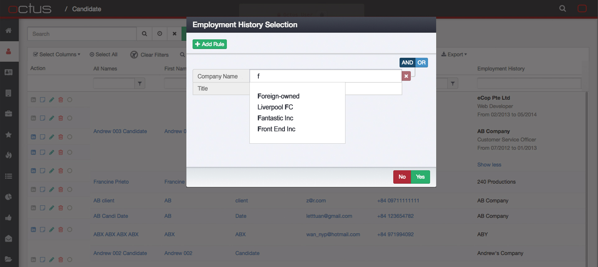
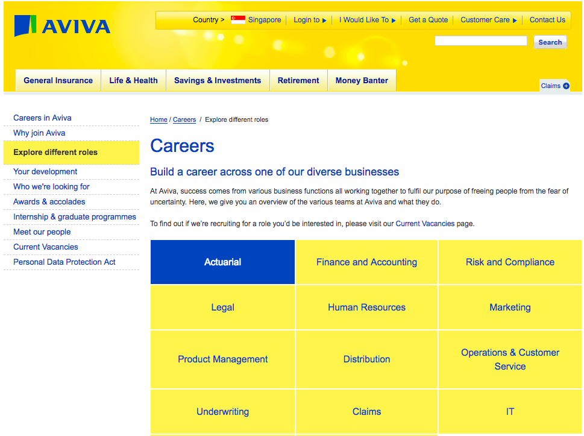
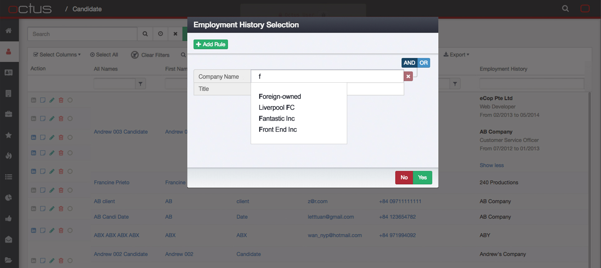
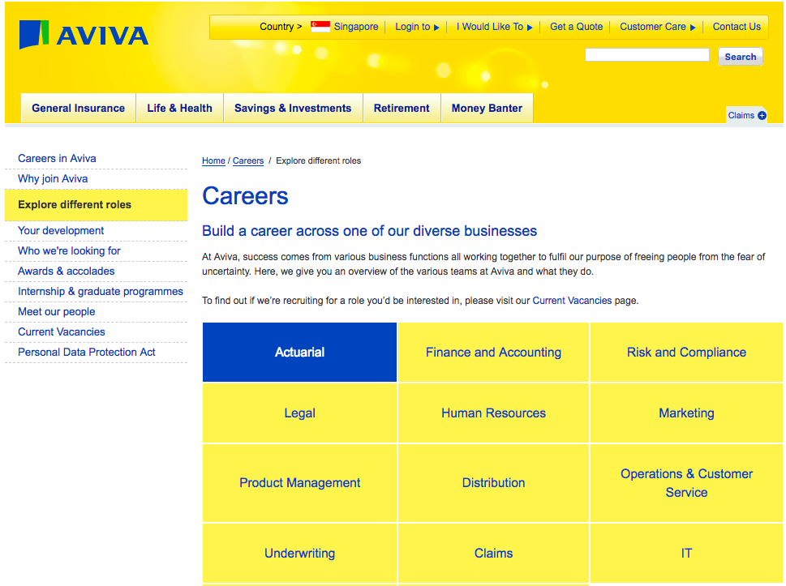

Twinkle Capote
UI/UX Designer and Developer.
The ever-changing trends in web design keeps me going.
There’s always something new to learn.
I focus on cross-platform, responsive and up-to-date web & mobile designs. It’s awesome!
...I do enjoy photography, Japanese culture, fashion, travelling and music as well.
My Portfolio

 




About
My passion for up-to-date design and development for web and mobile applications started off in 2009, when I learned how to do develop in Java and write web pages using only Notepad and eventually Adobe Dreamweaver. I also learned about design thinking using user persona and criteria for user-friendly applications.
I was able to apply those knowledge as a Mobile Developer, and successfully published cross-platform mobile applications in Play Store and App Store using Cordova from 2013 to 2014.
Halfway through 2014, I joined Aviva as an Application Analyst - designing and developing contents for their corporate websites and mobile applications. These applications were Aviva EzSnap, FPI SG and AstraLife.
In 2017, I joined Octus as a Front End Developer - developing new features and improving the UI/UX design for their existing CRM using Javascript 6, KendoUI, Bootstrap, BackboneJS and many more.
Also, I am currently upgrading myself and pursuing a part-time degree in Multimedia Technology and Design at Singapore University of Social Sciences (SUSS). You can say I work in the day, and study at night.
To see through these ever-changing transitions in the design trends and web technology is actually pretty exciting for me. It's never boring and there's always something new to learn!
My Skills
HTML5
Javascript (ES 5/6)
CSS3 / SASS
Photoshop CS6
Sketch
Java / C# / C++ / Object Pascal
Toolbox
- AngularJS, Backbone.Marionette, Handlebars, JQuery, underscore.js, lodash
- Cordova (Phonegap), Gulp, Grunt, NodeJS
- MacOS, Windows
- SublimeText, Adobe Photoshop CS6, InvisionApp, Sketch, iMovie, Blender, MS Office
- OpenCMS 7, SDL Tridion 2011
- Eclipse, IntelliJ
- Git, Git Flow, SourceTree, Bitbucket, GitHub
- Atlassian Confluence, JIRA
I've worked with...

Education
Juying Secondary School
GCE ‘O’ Levels
2006 - 2008
Nanyang Polytechnic
Diploma in IT
2009 - 2012
Singapore University of Social Sciences
BSc Multimedia Tech and Design
2015 - Present